During the course of my study in software development, I learned the basic syntax and functionality of the SQL language. By learning SQL in combination with PHP, I learned how to build database applications.
The following example shows how I was able to utilize a combination of SQL commands and PHP coding to build a simple database application that allows for users to input data by sending commands to the database server through the browser. This application requires the user to input a username and password via PHP in order to be able to input data. The application then validates the data, and only allows the data to be inserted into the database if the data is valid.
The first step in creating this database application was to create the database itself. To do this, I downloaded XAMPP to be able to work in PHP and SQL in a local testing environment. Once XAMPP was installed, I connected to the MySQL module in order to open a line of communication with XAMPP’s database server. I then pressed the “Admin” tab, which opened the phpMyAdmin tool (a free software tool written in PHP, intended to handle the administration of MySQL over the web).
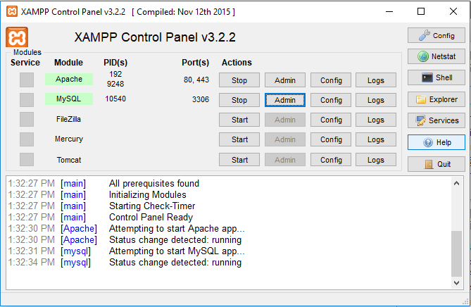
Finally, I created a new database called “autosdb” (Autos Database) via the SQL tab in phpMyAdmin. I did this by entering the following command:
CREATE DATABASE autosdb;Here is what this looks like in the phpMyAdmin tool: 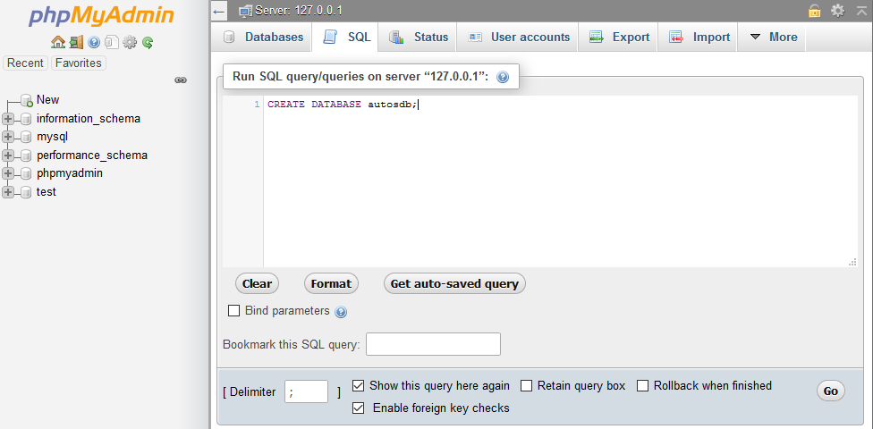
Following this, I went into the database and granted full access to username “diane” with password “zool” on the local web server with the following commands:
GRANT ALL ON autosdb.* TO 'diane'@'localhost' IDENTIFIED BY 'zool'; GRANT ALL ON autosdb.* TO 'diane'@'127.0.0.1' IDENTIFIED BY 'zool';The following appeared after executing these commands:
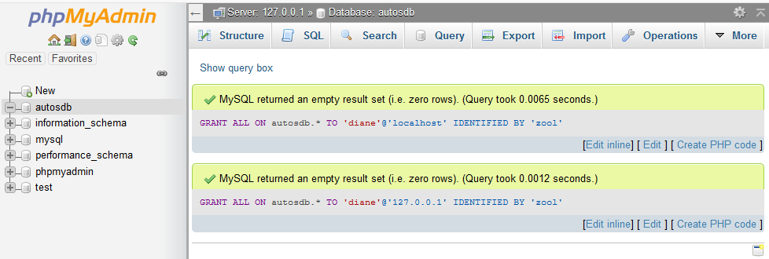
Finally, I created a new table in the Autos Database named "autos." This table includes a primary key named "auto_id," which is a an integer that automatically increments as data is entered. The logical key is called the "make" which accepts a maximum of 128 characters, and the foreign keys are both integers called "auto_year" and "mileage":
CREATE TABLE autos(
auto_id INTEGER NOT NULL
AUTO_INCREMENT KEY,
make VARCHAR(128),
auto_year INTEGER, mileage INTEGER);
After these commands are executed, a new table now exists in the database, and is ready to be used: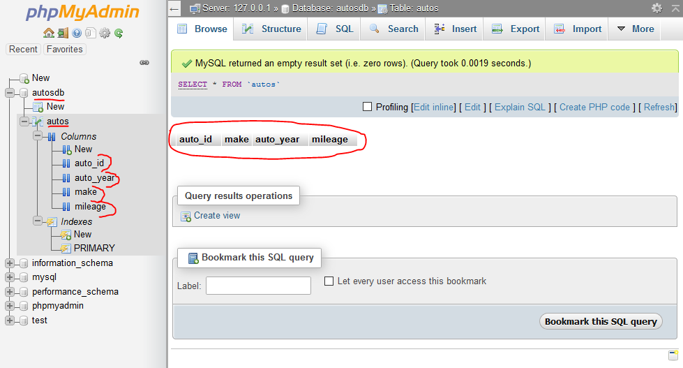
Now it's time to create the PHP files. This requires the following four files:
pdo.php
index.php
login.php
autos.php
pdo.php
The pdo.php file establishes a database connection using the username and password, the local host, and running on port 3306. The purpose of this file is to send SQL commands from PHP to the Autos Database. The code for this is as follows:
<?php
$pdo = new PDO('mysql:host=localhost;port=3306;dbname=autosdb',
'diane', 'zool');
$pdo->setAttribute(PDO::ATTR_ERRMODE, PDO::ERRMODE_EXCEPTION);
index.php
The index.php page provides an overview of the functionality of the Autos Database (similar to the index.php file on my PHP page). Here is what this looks like on the web server: 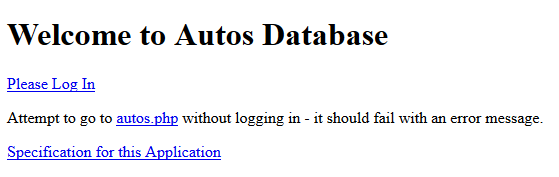Here is the code:
<!DOCTYPE html>
<html>
<head>
<title>Diane Krauthamer - Autos Database </title>
<?php
require_once "pdo.php";
?>
</head>
<body>
<div class="container">
<h1>Welcome to Autos Database</h1>
<p>
<a href="login.php">Please Log In</a>
</p>
<p>
Attempt to go to
<a href="autos.php">autos.php</a> without logging in - it should fail with an error message.
<p>
<a href="https://www.wa4e.com/assn/autosdb/"
target="_blank">Specification for this Application</a>
</p>
</div>
</body>
login.php
The login.php page provides user access to the Autos Database. It is similar to the login.php page on my PHP page in that includes data validation for the username and password, and the criteria for both the username and password are the same.Here is what login.php this looks like on the local web server:
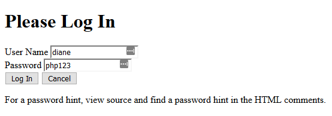
Here is the code used to create this page:
<?php // Do not put any HTML above this line
require_once "pdo.php";
if ( isset($_POST['cancel'] ) ) {
// Redirect the browser to index.php if user hits "Cancel"
header("Location: index.php");
return;
}
$salt = 'XyZzy12*_';
$stored_hash = '1a52e17fa899cf40fb04cfc42e6352f1'; // Pw is php123
$failure = false; // If we have no POST data
// Check to see if we have correct POST data, if we do process it
if ( isset($_POST['who']) && isset($_POST['pass']) ) {
if ( strlen($_POST['who']) < 1 || strlen($_POST['pass']) < 1 ) {
$failure = "User name and password are required";
} else {
$check = hash('md5', $salt.$_POST['pass']);
if ( $check == $stored_hash ) {
// Redirect the browser to autos.php
header("Location: autos.php?name=".urlencode($_POST['who']));
return;
} else {
$failure = "Incorrect password";
}
}
}
// Fall through into the View
?>
<!DOCTYPE html>
<html>
<head>
<?php
require_once "pdo.php";
?>
<title>Diane Krauthamers Login Page</title>
</head>
<body>
<div class="container">
<h1>Please Log In</h1>
<?php
if ( $failure !== false ) {
echo('<p style="color: red;">'.htmlentities($failure)."</p>\n");
}
?>
<form method="POST">
<label for="username">User Name</label>
<input type="text" name="who" id="username"><br/>
<label for="id_1723">Password</label>
<input type="text" name="pass" id="id_1723"><br/>
<input type="submit" value="Log In">
<input type="submit" name="cancel" value="Cancel">
</form>
<p>
For a password hint, view source and find a password hint
in the HTML comments.
<!-- Hint: The password is the four character sound a cat
makes (all lower case) followed by 123. -->
</p>
</div>
</body>
autos.php
Once the user is logged in, they are able to access the autos.php page. This page prompts the user to input the make, year, and mileage of an automobile. If the data entered is valid, it is then entered into the Autos Database. The data is also printed to the page - thus illustrating an effective request/response cycle.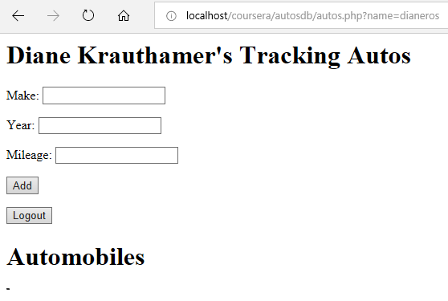
The following images show what a user sees when they enter valid data onto this page:
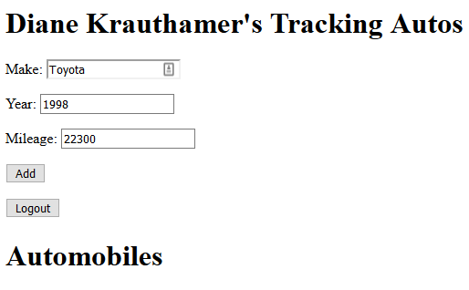
A validation message that the data was inserted appears at the top of the page, and a table showing the data appears below the form:
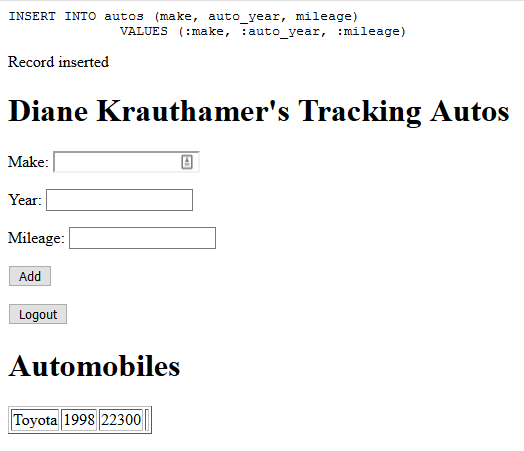
The user may enter as many records as they would like to, and this process continues:
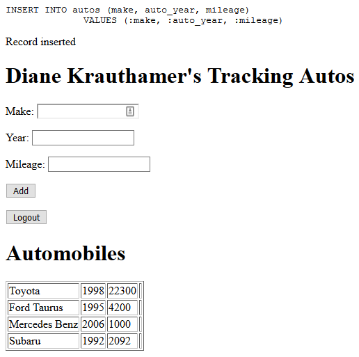
Meanwhile, you can see that the Autos Database is being populated from the phpMyAdmin tool as well:
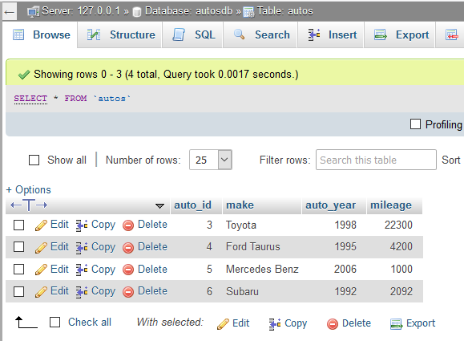
The code for autos.php is below:
<?php
require_once "pdo.php";
if ( isset($_POST['logout'] ) ) {
// If the user logs out, redirect the browser to index.php
header("Location: index.php");
return;
}
if ( isset($_POST['make']) && isset($_POST['auto_year'])
&& isset($_POST['mileage'])) {
if (!is_numeric($_POST['auto_year']) || !is_numeric($_POST['mileage'])){
echo("Mileage and year must be numeric."), PHP_EOL;
}
if ( strlen($_POST['make']) < 1 ) {
echo("Make is required");
}
else {
$sql = "INSERT INTO autos (make, auto_year, mileage)
VALUES (:make, :auto_year, :mileage)";
echo("\n".$sql."\n
\n");
$stmt = $pdo->prepare($sql);
$stmt->execute(array(
':make' => $_POST['make'],
':auto_year' => $_POST['auto_year'],
':mileage' => $_POST['mileage']));
echo("Record inserted");
}
}
$stmt = $pdo->query("SELECT make, auto_year, mileage, auto_id FROM autos");
$rows = $stmt->fetchAll(PDO::FETCH_ASSOC);
?>
<html>
<head></head><body>
<h1>Diane Krauthamer's Tracking Autos</h1>
<form method="post">
<p>Make:
<input type="text" name="make"></p>
<p>Year:
<input type="text" name="auto_year"></p>
<p>Mileage:
<input type="text" name="mileage"></p>
<p><input type="submit" name="add" value="Add"/></p>
<p><input type="submit" name="logout" value="Logout"/></p>
</form>
<h1>Automobiles</h1>
<table border="1">
<?php
foreach ( $rows as $row ) {
echo "<tr><td>";
echo($row['make']);
echo("</td><td>");
echo($row['auto_year']);
echo("</td><td>");
echo($row['mileage']);
echo("</td><td>");
echo('<form method="post">'."\n");
echo("\n</form>\n");
echo("</td></tr>\n");
}
?>
</table>
</body>
Return to top of page